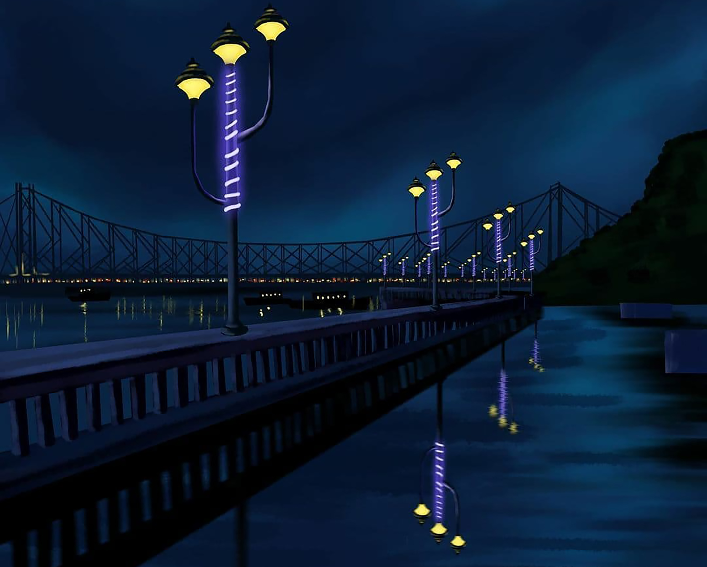
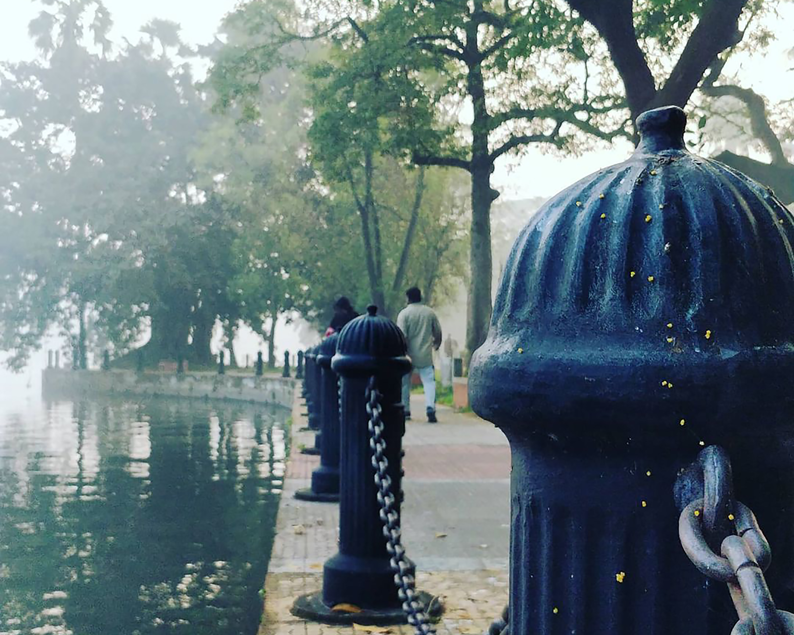
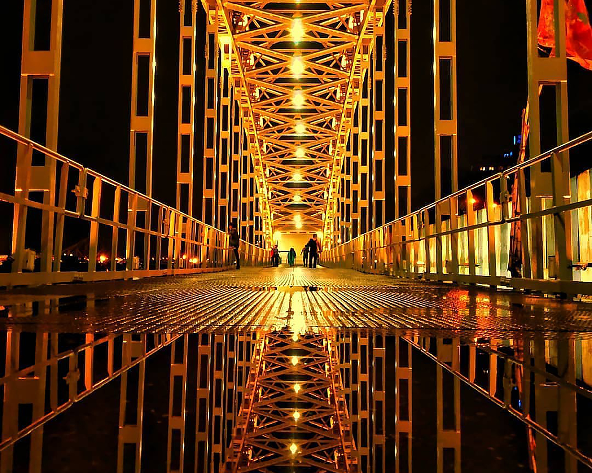

1. Victoria Memorial
4 km
from city center
The Victoria Memorial is a large marble building, which is considered to be the pride of Kolkata. Built between 1906 and 1921, it is dedicated to the memory of Queen Victoria. Now, it is a museum and a popular tourist spot under the Ministry of Culture.
2. Howrah Bridge
2 km
from city center
Located over the Hooghly river in West Bengal, Howrah Bridge or the Rabindra Setu is the main connection between Howrah and Kolkata. It is a cantilever bridge and is regarded as one of the busiest ones among them.
3. Vidyasagar Setu
4 km
from city center
Vidyasagar Setu, also known as the Second Hooghly Bridge, is a toll bridge over the Hooghly River in West Bengal, India. With watching the sunrise or sunset and taking a long walk in the cool air on the banks of the river are some of the preferred recreational activities here.
4. Belur Math
7 km
from city center
Belur Mutt is the headquarters of the Ramakrishna Math and Mission, founded by Swami Vivekananda. Situated on the west bank of Hooghly River, the temple is prominent for its architecture that embraces Hindu, Christian and Islamic styles and stands as an icon of unity of all religions.
5. Birla Planetarium
3 km
from city center
The Birla Planetarium in Kolkata, is the largest planetarium in Asia and the second largest planetarium in the world. It is a single-storeyed circular structure designed in the typical Indian style whose architecture is designed on the Buddhist Stupa at Sanchi.
6. Indian Museum

2 km
from city center
The Indian Museum is one of the oldest museums of the world boasting some of the most exquisite collections of ornaments, fossils, skeletons, antiques, armors, mummies and stunning Mughal paintings.
7. St. Paul's Cathedral
4 km
from city center
Said to be the first cathedral built in the overseas territory of the British Empire, St. Paul's Cathedral is a Anglican cathedral located in Kolkata. Also said to be the seat of the Diocese of Calcutta, it is a very fine example of Indo-Gothic style of architecture.
8. Marble palace
2 km
from city center
The Marble palace near the Chorbagan in North Kolkata built in 1835 by Rajendra Mallick is famed for its art collection of masterpieces by Reuben and paintings by various renowned international artists such as Reynolds, Van Gogh and Rembrandt.
9. Jorasanko Thakur Bari
1 km
from city center
Currently located on the Rabindra Bharati University campus in Jorasank, Jorasanko Thakur Bari is the house in which the first non-European Nobel laureate and poet, Rabindranath Tagore was born.
10. Esplanade
0 km
from city center
Esplanade, also officially known as Dharmatala, is a happening hub and frequently visited by locals for recreational activities and shopping. It is one of the few localities in the city with top end boutiques, hotels, malls, shops and restaurants.
11. Calcutta High Court
1.7 km
from city center
The Calcutta High Court is the oldest High Court in India. It is located in B.B.D. Bagh, Kolkata.It has jurisdiction over the state of West Bengal and the Union Territory of the Andaman and Nicobar Islands. The High Court building's design is based on the Cloth Hall, Ypres, in Belgium.
12. BITM

4 km
from city center
Being the first scientific and industrial museum in India, Birla Industrial and Technological Museum (BITM) is one of the prime attractions of Kolkata. It is famous for its galleries and 3D shows.
13. Maidan
3 km
from city center
Also known as the Brigade Parade Ground, Maidan is the largest urban park in Kolkata. The humongous stretch of land includes the famous Eden Gardens, several football stadiums and the Race Course Kolkata.
14. Rabindra Saravor
7 km
from city center
The erstwhile Dhakuri lake is an artificial tank spread over 75 acres and is home to various migratory birds from Siberia and Russia. The lake is surrounded by gardens, children's park an auditorium making it one of the unique places to visit in Kolkata.
15. Alipore Zoo
5 km
from city center
The Alipore Zoo is the oldest zoological park to have been established in India and is a major tourist attraction in Kolkata. It attracts tourists from all across the nation who visit the zoo to explore the wildlife that happily thrives here and to enjoy themselves.
16. Botanical Gardens
45 km
from city center
The Botanical Gardens of Calcutta were founded by Robert Kyd in 1787. Protected by the Botanical Survey of India, it stretches over 109 hectares. A Banyan tree in the garden, of more than 330 m circumference, known as The Great Banyan, is the largest tree in the world.
17. Tram Ride

----
----------------
When in the City of Joy, do not forget to enjoy a dainty tram ride across town. The activity is one of the top things to do in Kolkata and the experience is going to be one of the most funnest experiences ever. The rusty trams maintain the very vintage charm and are equipped with a TV and FM radio.
18. Eden Gardens
3 km
from city center
Popular as the largest cricket stadium in the India and the second largest in the world, the Eden Gardens can seat 66,000 spectators. It is set amidst an adjoining garden where Eden- related to the one-time Governor of Aukland and her sister would stroll during the evenings.
19. Salt Lake Stadium
5 km
from city center
Known as Vivekananda Yuva Bharati Krirangan, Salt Lake Stadium is an international multi-purpose stadium in Bidhannagar, Kolkata. The stadium takes pride in being the largest stadium of the country, it can accommodate upto 1,20,000 people.
20. Science city
5 km
from city center
One of its kind in India, the Science city was inaugurated on 1st July 1997. It is a major attraction for the residents of Kolkata as well as for the people visiting Kolkata. It is one of the finest and the largest science museums in the world and provides a fun way of learning science.
21. Prinsep Ghat
4 km
from city center
Prinsep Ghat, located on the banks of River Hooghly, is a majestic structure famous for its Greek inlays. With the magnificent Hooghly Bridge in the background, watching the sunrise or sunset and taking a long walk in the cool air on the banks of the river are some of the preferred recreational activities here.
22. Biswa Bangla Gate
11 km
from city center
Biswa Bangla Gate is an arch-monument in the city of Kolkata, West Bengal, India. It is built by HIDCO on the Biswa Bangla Sarani at Narkelbagan, Action Area-I of New Town. It also houses a restaurant. The visitors' gallery and restaurant are surrounded by glass, which will be part of the wall.
23. Eco Tourism Park
1 km
from city center
Eco Tourism Park is an expansive urban park designed to promote eco tourism in the city. It is the biggest urban park in India and occupies over 475 acres of land. The beauty of the location increases ten folds because of a water body that surrounds the park and forms an island in the middle.
24. Babughat
4 km
from city center
Babughat (Babooghat), Baboo Raj Chandra Ghat is one of the many ghats built during British Raj, along the bank of Hooghly River on Strand Road, Kolkata at B.B.D. Bagh, Kolkata. The ghat has a tall colonial structure, which is the landing berth of the ghat.
25. Nakhoda Mosque
1 km
from city center
Placed in the Chitpur area in the Burrabazar business district, Nakhoda mosque is one of the busiest Mosques of Kolkata and dates back almost a century. The minarets have been constructed in keeping with the Fatehpur Sikri style of architecture.
26. Dakshineswar Kali Mandir
9 km
from city center
Dakshineswar Kali is a revered Hindu navratna temple which is presided by Bhavatarini a form of Goddess Kali. Built in Rani Rashmoni in 1855 who was a devotee of Goddess Kali, the Bhavatarini form means ‘she, who liberates her devotees from the ocean of existence.’
27. St John's Church
2 km
from city center
St John's Church is one of the oldest churches in Kolkata that was built during the reign of the British Kingdom when the city was the capital of British India. It is a splendidly well-maintained structure that draws history and architecture buffs for its uniqueness and ancient features.